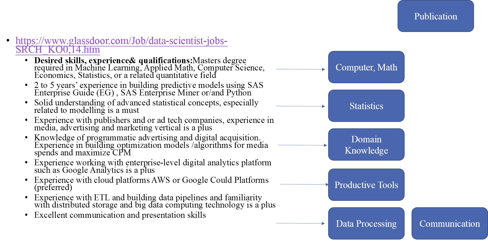
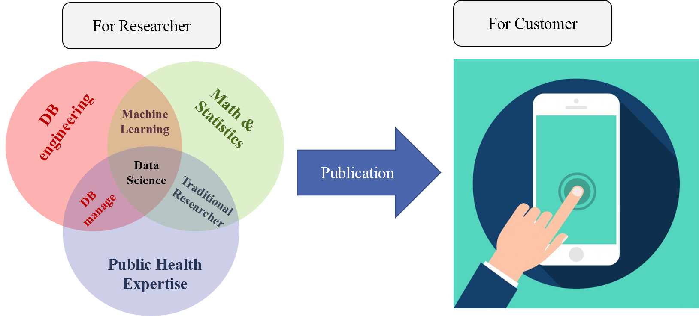
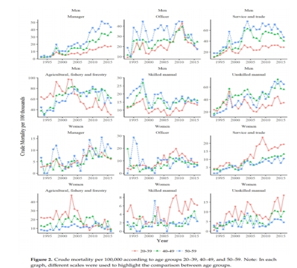

Chapter 2 보건학에서 데이터 사이언스
2.1 What is Data Science in public health
2010, Drew Conway (http://drewconway.com/)이 Venn diagram을 소개한 이후 데이터과학에 대한 여러 정보가 추가되고 있습니다. 초반에 Hacking Skills 라는 단어를 주목해 보세요, 이후 이것은 IT 또는 Hardware 라는 단어로 바뀝니다. 여기서 주목할 부분은 (Traditional Research)와 (Data Science)라는 부분입니다. 즉 기존의 연구 방법에 ML(machine learning) 과 IT 적인 것이 결합되면 DS (DataScience)라고 여겼었던 것 같습니다.
Drew Conway
2.2 어떤 일을 하는가?
어떤 것을 이론 적으로 정의 내리기 보다는 어떠한 일을 하는가?로 질문을 바꿔 보는 것도 좋을 것 같습니다. 실제적인 부분에서 Data Scientist 로 채용되어 있는 전문가는 어떠한 일을 하는가?에 대한 질문으로 한 사이트의 글을 가져 와봤습니다.
| . |
|---|
| https://www.robertwalters.us/: |
| “The Role of a Data Scientist,” “Data scientists help companies interpret and manage data and solve complex problems using expertise in a variety of data niches. They generally have a foundation in computer science, modeling, statistics, analytics, and math - coupled with a strong business sense. It’s this merging of esoteric intelligence and practical knowledge that makes the data scientist so valuable to a company.” |
즉,
| . | . |
|---|---|
| 1) | Data manage |
| 2) | solve the problem using data (statistics, analytics) |
| 3) | strong business sense |
2.3 어떤 일을 시키고 싶은가 (채용 공고)
이 번에는 회사에서 어떠한 능력이 있는 사람을 채용하고 싶은지를 살펴 보겠습니다.
| 내용 | 정리 |
|---|---|
| https://www.glassdoor.com/Job/data-scientist-jobs-SRCH_KO0,14.htm | . |
 즉, 아래의 능력을 요구하고 있습니다.
| skills |
|---|
| Computer Sc |
| Applied Math |
| Machine Learning |
| Statistics |
| Domain Knowledge |
| Data Processing |
| Productive Tools |
| Communication |
도대체 한사람을 뽑겠다는 건지, 협업을 할 팀을 뽑겠다는 말인지 구분이 되지 않습니다. 즉 Data Scientists (team) 을 원하는 것 같습니다. 결국 최근에는 venn diagram을 살펴보면 Data Products를 어떻게든 원하는 것이고, 이를 이루기 위해 여러 협업이 가능한 전문가들을 모아 팀을 만드는 것이 된 것 같습니다. 결국 app publication, products 가 중요!
New Venn Diagrams
2.4 Towordsdatascience.com: 공부할 것들
Data Science Getting Started Probability and statistics Information theory Cleaning data Data Visualization Case Studies A/B Testing Career
library(tidyverse)
library(DT)
tibble(`Data Science` = c('Getting Started', 'Probability and statistics',
'Information theory', 'Cleaning data', 'Data Visualization',
'Case Studies', 'A/B Testing', 'Career', "", "", "", "" ),
`Machine Learning` = c('Unsupervised Learning', 'Supervised Learning',
'Model Evaluation', 'Reinforcement Learning', 'Time Series',
'Bayesian Methods for Machine Learning', 'Deep Learning',
'Genetic Algorithm', 'Graph Theory and Network Analysis',
'Natural Language Processing', 'Bias', 'Fairness and Interpretability')
,
`Programming`=c('R', 'Python', 'Other Programming Languages',
rep("", 9))) %>%
datatable()2.5 보건학 데이터 과학자, 수업
| 정리 |
|---|
| 데이터 과학팀이 더 정확할 수 있다. |
| 사회가 원하는 것은 전반적인 데이터과학자, 협업자 |
| 대부분의 학문이 그렇듯이, 추후 전문 분야를 키워가게 됨. |
| 공통된 3D 요소 |
|---|
| Data Base management (Data engineering) |
| Data analysis, machine learning |
| Domain Knowledge |
또한 최근에 Cummunication 또는 Publication 이 결과물로 이해가 되므로, 연구자에서 개발자로서의 생각도 하여야 합니다. 우리가 연구한 연구 물이 어떻게 사용될 수 있는가를 고려하게 됩니다. 예를 들어 통계청 사망자료로 자살 위험도를 구했다면, 이것을 연구자가 아닌 사람들은 어떻게 사용할지를 고민해서 결과물을 만들게 됩니다. 아래의 그림으로 정리해 보았습니다.

따라서 본 수업에서는 publication을 어떻게 할지, 어떠한 방법으로 Cummunication할지를 고민해 보고, Productive tools 로 app 계발을 염두해 두고 진행하게 됩니다. 첫 학기에는 For Researcher에 대해 두번째 학기에는 For Customer에 대해 공부하게 됩니다.
| 첫 학기 (2학기) | 두번째 학기 (1학기) |
|---|---|
| 보건학데이터과학(9-12월) | 보건학-프로젝트(3-7월) |
이 수업을 통한 최종 산출물의 예시는 https://jinhaslab.shinyapps.io/kosis_mr/ 과 비슷한 형태로 기대하고 있습니다. 저한테 자주 요구되는 결과물 중 하나는 통계청 사망자료를 통해 직업군별 사망률의 차이를 비교해 달라는 것입니다. 통계청 사망자료를 이렇게 분석하는 것은 여러 한계가 있지만, 뉴스나 학회발표에서 종종 요구되고 있습니다. 그때 마다 반복적으로 분석하기 보다는 누구나 분석할 수 있는 것을 만들고 공개하는 것이 좋겠다는 생각을 했습니다. 실제 아래와 같은 논문을 작성할 수 있는 app을 R 로 만들었습니다.
https://www.mdpi.com/1660-4601/16/11/2007
 보건학 project에서는 산출물을 만드는 것에 집중합니다. 예를 들어 우리가 가진 정보를 공개하는 방법에 대해 실습합니다. 이때 홈페이지나 웹앱에 결과를 나타내는 것을 주로 실습합니다. 보건학 데이터 중에 시간적 자료, 건강관련 자주 사용되는 표와 그림, 지도에 나타내는 방식 등을 실습합니다. 예를 들면 아래와 같습니다. https://dspubs.org/webapps/indmap_shiny/
2.6 실습에 R을 사용하는 이유, 교과서
R은 데이터 분석과 시각화, 공표, app 계발을 연속상에서 수행하기 쉬운 언어 중 하나입니다. 또한, 다른사람의 지식을 짧은 시간에 습득하기에 편한 생태계를 가지고 있습니다. 이에 교과서로는 By Rafael A. Irizarry 과 Hadley Wickham의 책을 이용하겠습니다.
| 제목 | 저자 | url |
|---|---|---|
| Introduction to Data Science with R | Rafael A. Irizarry | https://rafalab.github.io/dsbook/ |
| R for Data Science | Garrett Grolemund, Hadley Wickham | https://r4ds.had.co.nz/index.html |
- Data Science 의 전체를 다루지 못하므로, 각 분야에 대해서는 꼭 찾아서 더 공부하시기를 바랍니다. 좋은 경험 얻으시기를 바랍니다.